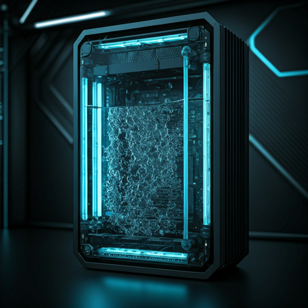

Temperature
High-resolution thermal diodes sample die and coolant temperatures hundreds of times per second, giving the ML model a precise, continuous heat map of every active core and memory bank.
Predictive Thermal Engine — Active
Traditional cooling reacts after heat appears. ADAPT // COOL uses embedded sensors and on-device machine learning to forecast heat spikes before they hit the silicon — then proactively regulates pump speed, coolant flow, and fan curves to prevent throttling entirely. The result: continuous adaptation that improves with every workload.
Embedded Intelligence
High-resolution thermal diodes sample die and coolant temperatures hundreds of times per second, giving the ML model a precise, continuous heat map of every active core and memory bank.
CPU and GPU utilization telemetry streams directly to the prediction engine. The model recognises workload-intensive operations — render bursts, gaming sessions, compile jobs — and pre-arms the cooling system milliseconds before the thermal threshold is reached.
Ambient temperature, humidity, and chassis airflow are factored into every prediction. A warm room mid-summer and a cold server rack in winter receive different cooling curves — automatically, with no user intervention required.
How It Works
Sense
Temperature, workload, and environmental sensors stream raw telemetry at sub-millisecond intervals.
Predict
A lightweight on-device neural network forecasts thermal load up to 200 ms ahead of the spike — 99.8 % accuracy in validation.
Decide
The control layer weighs performance targets, noise budgets, and eco-mode constraints to select the optimal actuator commands.
Actuate
Pump speed, coolant flow, and fan curves are adjusted in real time before the sensor even registers the spike.
Learn
Every cycle feeds back into the model. The system continually adapts to your unique hardware, workload patterns, and environment.
Proactive Control
The pump is the first actuator to respond. By proactively ramping RPM ahead of a predicted thermal spike, coolant arrives at the cold plate before heat accumulates — eliminating the lag inherent in reactive cooling architectures. At idle, pump speed drops to whisper-quiet minimums.
Flow rate is modulated independently of pump speed in multi-zone configurations. The AI directs coolant exactly where it is predicted to be needed — CPU, GPU, or VRM — delivering 30 % less pump energy waste compared to static-configuration AIO systems.
Intelligent fan curve generation replaces static BIOS profiles. The system balances acoustic comfort with extreme thermal dissipation, proactively stepping fan speeds based on predicted load rather than reacting to rising temperatures that have already slipped past spec.
Measurable Results
Zero
Predictive pump control removes throttling events entirely. Silicon runs at sustained maximum voltage — no performance lost to reactive thermal catch-up.
-30%
AI-driven flow regulation delivers coolant only when and where it is predicted to be needed, cutting pump energy waste by up to 30 % compared to conventional AIO systems.
-40%
Eco modes and predictive fan curves keep the system near-silent at idle and during light workloads, cutting audible fan noise by up to 40 % versus always-on reactive configurations.

The ADAPT // COOL software platform connects your hardware to a continuous intelligence loop. On the desktop, a lightweight agent monitors telemetry in real time and surfaces live thermal health dashboards. In the cloud, anonymised aggregate data trains the next generation of prediction models — so every unit gets smarter over time, not just yours.
Self-Learning Engine — The system improves over time, adapting cooling curves to your unique usage patterns without any manual tuning.
Eco Modes — User-selectable profiles bias the prediction logic toward silence and efficiency, reducing power draw during creative and office workloads.
Cloud Optimisation — Opt-in cloud sync enables fleet-level analysis for enterprise deployments, with Submerge systems benefiting from data-center-scale model refinements.
Continuous Adaptation — Unlike static configurations, ADAPT // COOL maximises efficiency every second, learning from every workload cycle to sharpen its forecasts.
Ready to experience it?
The same predictive intelligence engine powers both product families — from a single desktop rig to an entire data-center rack.